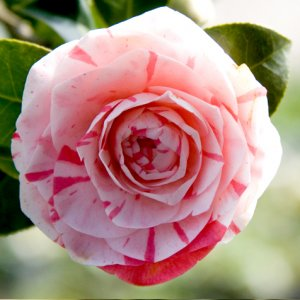
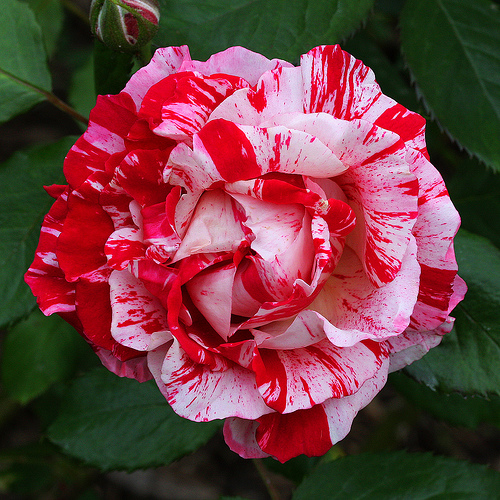

Далия
Една от многото градини и оранжерии за отглеждане на далии е градината в Хамбург, която разполага с 10 хил.кв.м от най-голямото насаждение на този сорт цветя в Северна Германия и е открита преди 82 години. Тогавашният директор Фердинанд Тутенберг засажда първото цвете като част от голям парк, който замисля да създаде в центъра на града. Оттогава изобилието от цветя се обогатява непрекъснато. Днес те наброяват 12 хиляди от 261 различни сортове.
Камелия
Камелиите са изключително взискателни към температурата. Трябва да им се осигури прохладно и светло място. Единствено, когато залагат цветните си пъпки – обикновено през юли-август, температурата трябва да е около 20-25 градуса. По-късно, докато пъпките съзряват, не трябва да превишава 15 градуса, а по време на цъфтежа оптималните градуси са 8-10,за някои сортове и по-ниски. Почвата трябва да се поддържа влажна,без преовлажняване или пресушаване
Роза
Счита се, че отглеждането на рози за получаване на розова вода и по-късно на розово масло е започнало в Индия и Египет. С придвижването на турците и арабите през 9-ти век то е пренесено в Персия и Тунис. Търговията с розово масло в Европа е започнала през 16 век, а първите данни за розови насаждения по нашите земи са от 17 век – около Одрин, а в пределите на днешна България първите документални сведения са от 1712 г. за землището на с. Войнягово, Карловско. Със сигурност се знае, че в средата на 19 век се е формирала така нар. Розова долина, в района между Павел баня, Казанлък, Карлово и Стрелча.